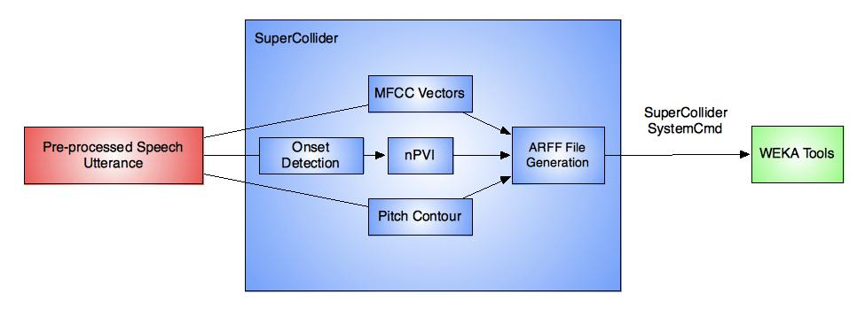
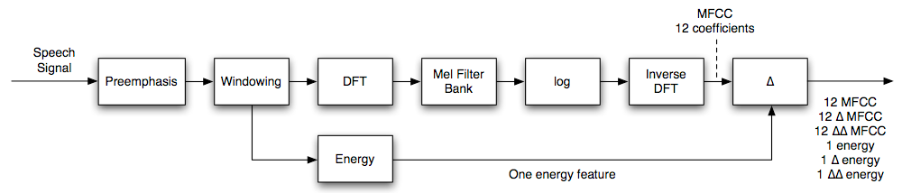

What is LiD?
The identification of a given spoken language from a speech signal
Related to the fields of Speaker Identification & Automatic Speech Recognition (ASR)
Who Cares?
6,909 distinct languages & dialects
94% of global population speak only 6% of world languages
Practical
LiD could be really useful...
- International service industries
- Hotels, Airports, Global Call Centres
- Emergency & medical situations
Differences Between Languages
Languages contain information that makes one discernible from the other
- Phonemes
- Prosody
- Phonotactics
- Syntax
What Can Humans Do?
- Bias towards native language arises in infancy
- Prosodic features some of the first cues to be recognised
- Humans can make a reasonable estimate on language heard within 3-4 seconds
- Even unfamiliar languages may be plausibly judged
Previous Attempts...
- Attempts as early as 1974 - USAF work, therefore classified.
- Methodological investigations from 1977 (House & Neuburg)
- Studies for the most part centre on phoneme modelling and sequencing constraints
- Raw acoustic waveforms have been visited (Kwasny 1993)
...A Simpler Approach?
- Phonotactic approaches require expert linguistic knowledge
- Phoneme and phonotactic modelling time consuming
- Given the speed of human LiD abilities...
System Overview
Feature Extraction
- Handled by SCMIR Library (Collins, 2010)
- Spectral information - MFCC Vectors
- Pitch contour information
- Speech rhythm - nPVI
MFCCs
Mel Frequency Cepstral Coefficients
nPVI Function
Classification
- Handled by the WEKA toolkit
- Built in machine learning algorithms
- Called from command line by SuperCollider
Calling WEKA
Comparisons Made
- 66 language pairs from 12 languages
- A comparison within language families
- A comparison of all 12 languages
- Averaged & segmented data
Mi CASA e su...robustness
- Computational Auditory Scene Analysis (Much cooler than it sounds!)
- Real-world signals ≠ pre-processed, 'clean' data
- A need to analyse only the part of the signal that matters
What's Next?
- A larger dataset
- Phonemic Segmentation
- Improved nPVI
- Real-time operation
- Robustness...
Towards Babelfish
- ASR
- NLP
- CASA
- LiD
Bonus Cat!
/